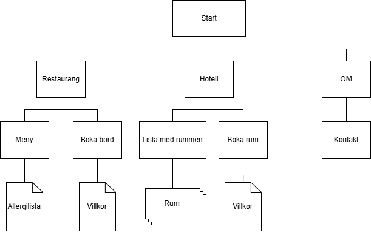

1. Syfte och målgrupp
I uppgiften skapades en webbplats för ... En restaurang och hotell. Restaurangen serverar frukost, lunch, och afternoon tea och har ordinarie stängt på kvällarna. Hotellet har fyra rum. För hotellgäster är det möjligt att boka middag om de vill äta på kvällen.
Syfte med webbplatsen är att informera kunder och locka till besök.
Mål
- Informera besökare.
- Visa restaurangens meny.
- Bordsbokning för restaurangen.
- Bokning av hotellrum.
- Det ska finnas snygga bilder på maten.
- Det ska finnas bilder på hotellrummen.
Målgruppen består av:
- Besökare till restaurangen.
- Hotellgäster
- Turister som kanske inte talar svenska.
Användarnas behov
- Se plats och öppettider.
- Se restaurangens meny, med priser.
- Se allergilista för menyn.
- Se priser för hotellet.
- Se vägbeskrivning, tex. vägförslag och närliggande hållplatser.
- Se tillgänglighetsinfo.
2. Kravspecifikation
Innehåll
- Meny med pris.
- Minst en bild för varje måltid.
- Bild på restaurangen.
- Bilder på hotellrummen.
- Prislista för hotellet.
- Kontaktinformation
- Adress, öppettider, telefon, e-post.
- Vägbeskrivning
- Parkering, hållplatser.
- Allergilista
- Tillgänglighet
Funktion
- Man ska kunna boka bord.
- Man ska kunna boka hotellrum.
3. Beskrivning av arbetet
För att visa hur innehållet ska vara placerat skapades ett diagram utifrån kraven.
4. Bilder
Bilderna har redigerats i ett bildredigeringsprogram, där följande gjorts:
- ...
- ...
- ...
Picture-elementet används på sidan ... för bilden ...
5. Utvärdering mot kravspecifikationen
6. Användartest
- med metoden "Tänka högt" (Thinking Out Loud)
...
Källförteckning
...